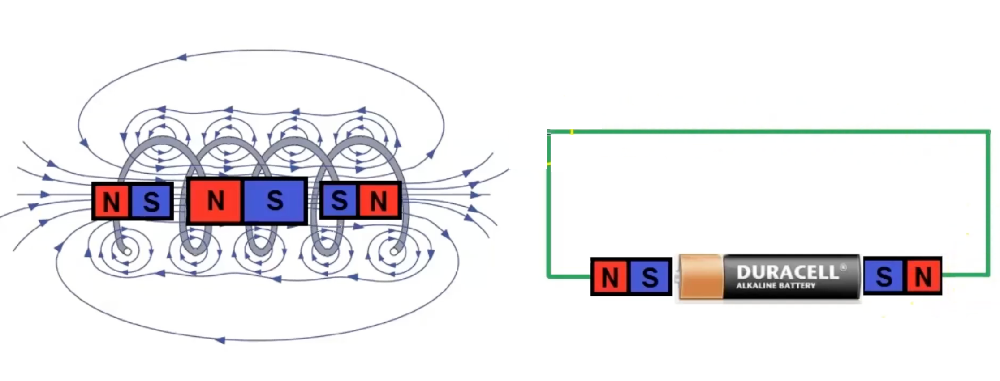

This presentation explains the motion of a double A battery with magnets at its ends inside a copper coil.
Figure 1: Diagram of the coil and battery.
Understanding the magnetic setup I'm piecing together the battery's configuration, with magnets at its ends, housed within a copper coil, causing movement. This setup likely indicates a simplified electric motor model.
Part 1: System Parameters
- Coil Specifications:
- Diameter: 1 inch (0.0254 m).
- Length: 10 m.
- Number of turns: 1000.
- Turns per meter: \( n = 100 \, \text{turns/m} \).
- Battery and Magnets:
- Mass of the battery: \( m = 0.02 \, \text{kg} \).
- Magnetic field strength of each magnet: \( B = 0.1 \, \text{T} \).
- Coil Resistance:
- Wire length: \( L_{\text{wire}} = N \cdot \pi D = 1000 \cdot \pi \cdot 0.0254 \approx 79.8 \, \text{m} \).
- Wire cross-sectional area: \( A_{\text{wire}} = \pi (0.0005)^2 \approx 7.85 \times 10^{-7} \, \text{m}^2 \).
- Resistivity of copper: \( \rho = 1.68 \times 10^{-8} \, \Omega\cdot\text{m} \).
- Total resistance: \( R = \rho \cdot \frac{L_{\text{wire}}}{A_{\text{wire}}} \approx 1.71 \, \Omega \).
Part 2: Electromagnetic Induction
The motion of the battery through the coil induces an electromotive force (EMF) given by Faraday's Law:
\[ \varepsilon = -B \cdot A \cdot n \cdot v, \]
where:
- \( A = \pi r^2 = \pi (0.0127)^2 \approx 0.0005067 \, \text{m}^2 \) (cross-sectional area of the coil).
- \( v \) = velocity of the battery.
The induced current is:
\[ I = \frac{\varepsilon}{R} = \frac{B \cdot A \cdot n \cdot v}{R}. \]
According to Lenz's Law, the induced current opposes the motion of the battery.
Part 3: Damping Force
The interaction between the magnetic field and the induced current creates a damping force:
\[ F = \frac{B^2 \cdot A^2 \cdot n^2}{R} \cdot v = k \cdot v, \]
where:
- \( k = \frac{B^2 \cdot A^2 \cdot n^2}{R} \approx 1.5 \times 10^{-5} \, \text{N·s/m} \).
Applying Newton's Second Law:
\[ m \frac{dv}{dt} = -k \cdot v. \]
The solution for velocity as a function of time is:
\[ v(t) = v_0 \cdot e^{-(k/m) \cdot t}. \]
Integrating the velocity equation gives the position:
\[ x(t) = \frac{v_0 \cdot m}{k} \left( 1 - e^{-(k/m) \cdot t} \right). \]
Part 4: Numerical Example
- Initial Conditions:
- Initial velocity: \( v_0 = 1 \, \text{m/s} \).
- Time constant: \( \tau = \frac{m}{k} \approx 1333.33 \, \text{s} \).
- Time to Exit the Coil:
- The battery exits the coil when \( x(t_{\text{exit}}) = 10 \, \text{m} \):
- \( t_{\text{exit}} \approx 10.04 \, \text{s} \).
- Velocity at Exit:
- \( v_{\text{exit}} = v_0 \cdot e^{-(k/m) \cdot t_{\text{exit}}} \approx 0.9925 \, \text{m/s} \).
- Motion Outside the Coil:
- After exiting the coil, the battery moves with constant velocity \( v_{\text{exit}} \).
Position vs Time Graph
Exponential damping inside the coil (\( t \leq 10.04 \, \text{s} \)), constant velocity outside.